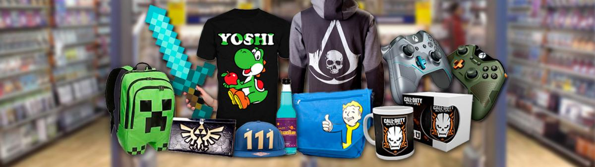
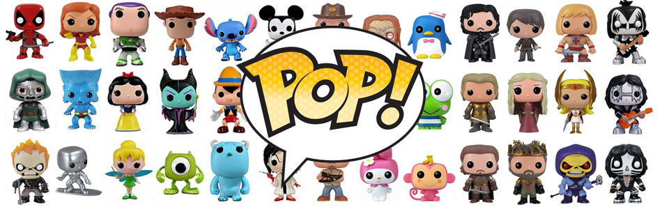
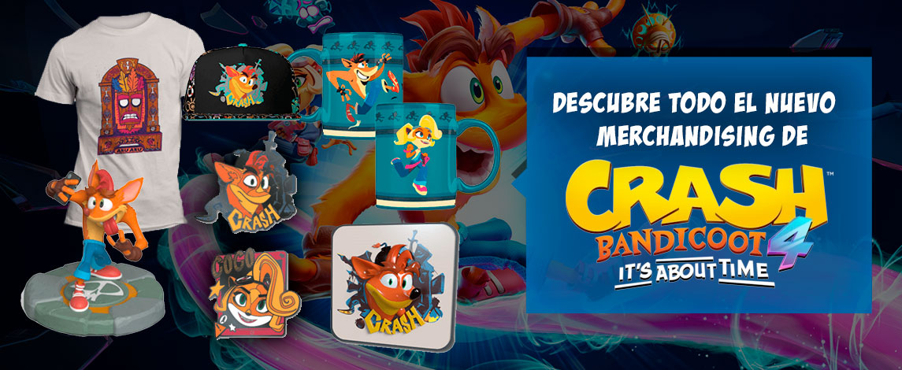

Merchandising
El merchandising de videojuegos o de series de televisión se vende en muchas tiendas online y también físicas. Para asegurarte de que los productos que compras son los oficiales, lo mejor es recurrir a vendedores con una reputación sólida que tengan buenas valoraciones de clientes.
¿Cuándo arrancó el merchandising de videojuegos? Bueno, una vez más tenemos que empezar hablando de Nintendo que era, en origen, una compañía dedicada a la fabricación de naipes. En 1959, su presidente, el legendario Hiroshi Yamauchi, se hizo con la licencia para fabricar cartas basadas en personajes Disney, marcando un antes y un después en la historia de Nintendo.
A continuación, hablaremos de lo más vendido en merchandasing en la actualidad, siempre desde el punto de vista del jugador.
Figuras POP
Como el nombre indica, POP Vinyl, estas figuras están fabricadas en vinilo, lo que hace que muestren unos colores realmente buenos, sin el riesgo de que al cabo de poco tiempo se caiga la pintura o se pelen algunas zonas, y al mismo tiempo hace que sean un artículo relativamente barato de comprar y coleccionar.
Y sí, salta a la vista que se trata de unos muñecos cabezones, aunque no se trata de los clásicos muñecos bobble head. La cabeza de las figuras POP miden aproximadamente un poco menos de la mitad de la altura total del personaje, y tienen unas características comunes: aspecto cuadrado con los bordes redondeados, grandes ojos negros redondeados, nariz pequeña picuda y sin boca. Cuando se trata de personajes no humanoides puede variar ligeramente
Complementos
En Tienda de Gaming no nos podíamos olvidar de ofrecerte una categoría para el merchandising de tus juegos favoritos. Aquí encontrarás gran cantidad de productos si amas la cultura de los videojuegos.
Descubre una gran colección de ropa, posters, figuras coleccionables, estatuas y más, para dar satisfacción a tus preferencias más frikis. Si quieres comenzar o completar tu colección, en Tienda de Gaming encontrarás los productos de las franquicias más de moda, Kingdom Hearts, La Guerra de las Galaxias, Harry Potter, etc.
También dispondrás de textiles y complementos muy molones como carteras, gorras, llaveros, mochilas y muchos más productos a los mejores precios. Ya sabes, tanto para ti, como para hacer el mejor regalo, en Tienda de Gaming tienes lo que buscas.
